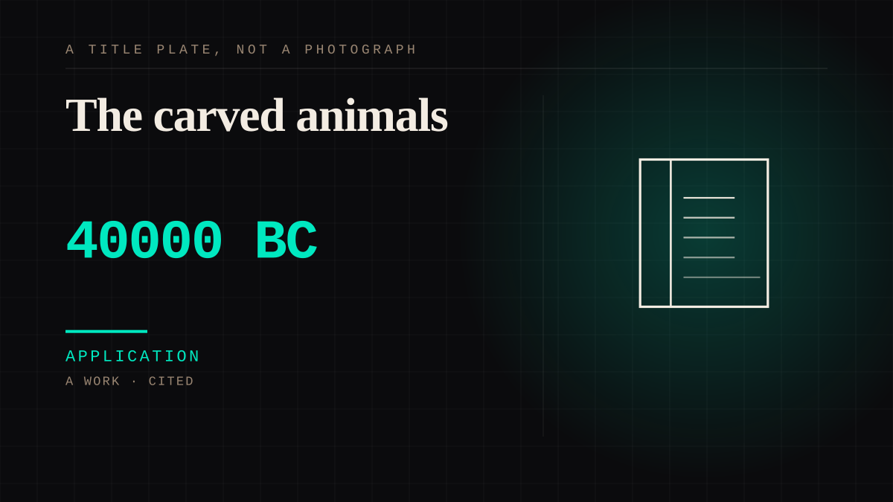

A work · 40000 BC · Deep prehistory
The carved animals
Upper Paleolithic carvers in Europe made small figures of animals and people from mammoth ivory from about forty thousand years ago. The Vogelherd set includes a cave lion, a bison, a horse, a bear, a mammoth, and a lion-man - a body with a human face on a lion's. At La Madeleine in France a bison carved from antler is caught mid-grooming, turning its head to lick its own side.

This is what the dog entry used to deny. Animals carrying human qualities were being made, kept and shown to other people tens of thousands of years before the dog: the grooming gesture is specifically human, and somebody carved it in antler on purpose. It also puts an anthropomorphised animal on the same taxonomy shelf as the dog roughly twenty-five thousand years ahead of it, which is the honest shape of the argument. The dog is not the first animal to be given human shape in the imagination. It is the first animal to be bred into living alongside us.
Application. One-sided attachment put to work on purpose. Creator economies, community, fandom as infrastructure, and the things that genuinely help people. Not automatically good - a tool with an obvious use is a tool that will also get a bad one.
Where it sits
3000 BC Before 0 · 40000 BC 1 BC
Provenance · 2 source record(s)
- retrievableAnimal, human and hybrid figurines made by modern humans beginning at least 35,000 years ago, across a broad area of Europe, in a spread of sizes, shapes and styles made by different groups - including the Vogelherd cave lion, mammoth, bison and horse, and the lion-man.Smithsonian Institution, Human Origins Program. Figurines. Human Evolution Evidence: Behavior, Art & Music. ↗
- retrievableThe La Madeleine 'bison licking its side', Magdalenian, c. 14,000 years old, carved from the palmate section of a reindeer antler, shown turning to lick its own flank - a self-grooming gesture rendered in a portable object.Bradshaw Foundation. La Madeleine Bison Licking its Side. Ice Age Art. (Catalogue entry for the carving held at the Musee d'Archéologie Nationale, Saint-Germain-en-Laye.) ↗
Connected · 2 out, 3 in
It sits in
The full timeline → · The database → · See it in the atlas →